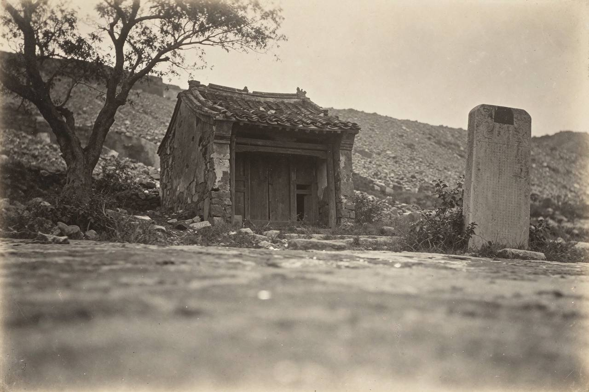

村情概况
石浦岙村坐落在沿海一带，背靠低矮山峦，前临滩涂与近海。村子沿一条土路铺开，石墙老屋错落，屋旁常搁着修补中的旧木船，田地一直铺到岸边。
村民世代以近海捕捞和滩涂种养为生，兼种少量旱地作物。逢潮汛出海，闲时在晒场翻晒渔获与粮食，村道上往来的多是挑担、骑车的乡亲，日子缓慢而安稳。
村里老屋、旧船与田埂保留了早年的样貌，本栏用于记录村落的位置、物产与旧事，供在外的乡亲回乡时翻阅。
地理位置
沿海山麓，面朝滩涂
主要生计
近海捕捞 · 滩涂种养
村落格局
土路贯通，石屋沿路分布
周边地貌
远山 · 庄稼地 · 港湾
历史沿革与民俗信仰
石浦岙村建村于清乾隆年间，先民依山傍海，世代以近海捕捞和滩涂种养为生。村中民风淳朴，邻里和睦。村西头建有龙王庙一座，香火绵延数百年，是全村的精神寄托。
关于龙王庙的由来，村中流传着一段古老的传说。
据村志记载，民国三十二年间，时局动荡，海疆不宁。外敌盘踞沿海，封锁了港口航道，村中渔船无法下海，田里的庄稼被搜刮一空。全村老小靠树皮草根剥食，苦不堪言。
那年农历八月，一场罕见的强台风正面登陆石浦岙。狂风巨浪中，海面传来异响，见龙王破水而出，通体泛白，翻江倒海。一夜之间，盘踞附近海域的外敌尽数倾覆，死伤大半，残余者仓皇逃窜。
台风过后，村民感念其除暴安良、拯救百姓之恩。将此滩涂命名为“龙王滩”，并在村西头重建庙宇并塑像，世代供奉，以保出海平安、风调雨顺。
时至今日，那段苦难岁月已随风而去。石浦岙村依托丰富的海洋资源，发展冷链物流与水产品加工，村庄面貌焕然一新。但每逢农历八月，村中老人依然会到龙王庙上香祭拜，祈求平安。
